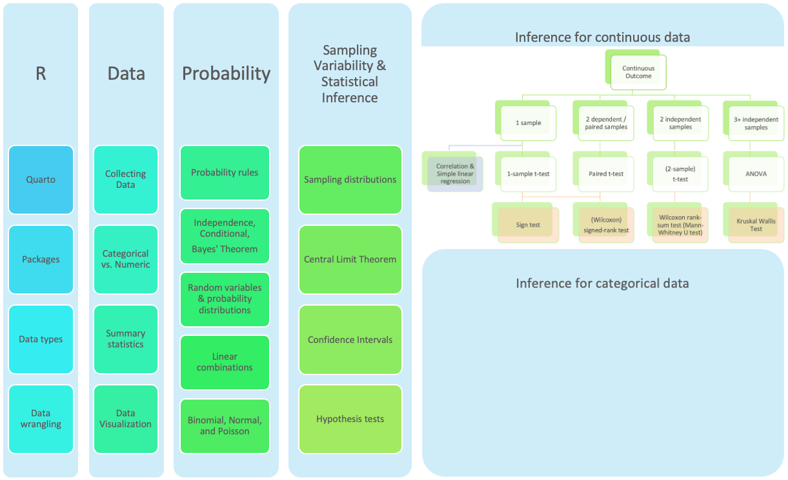
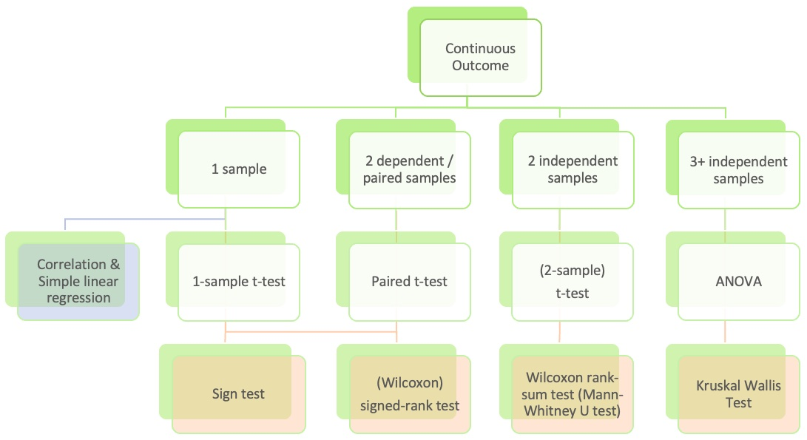
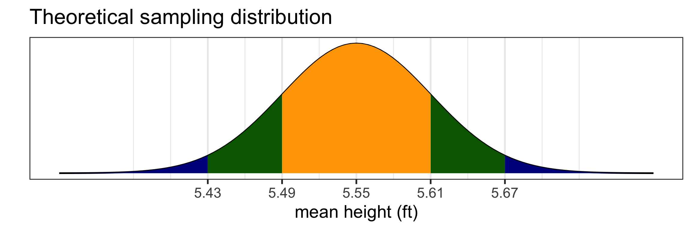
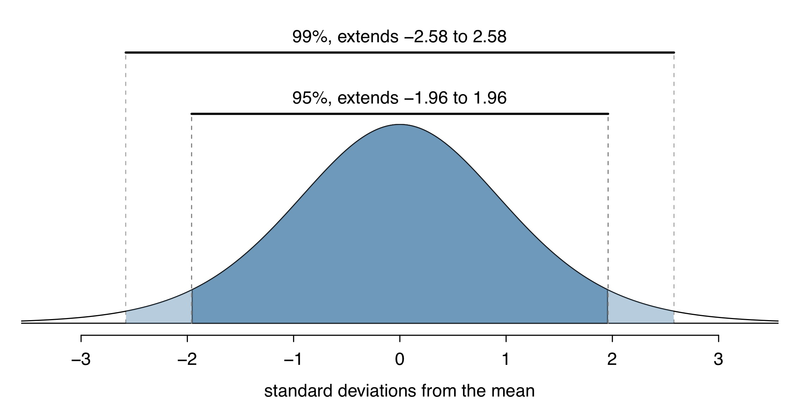
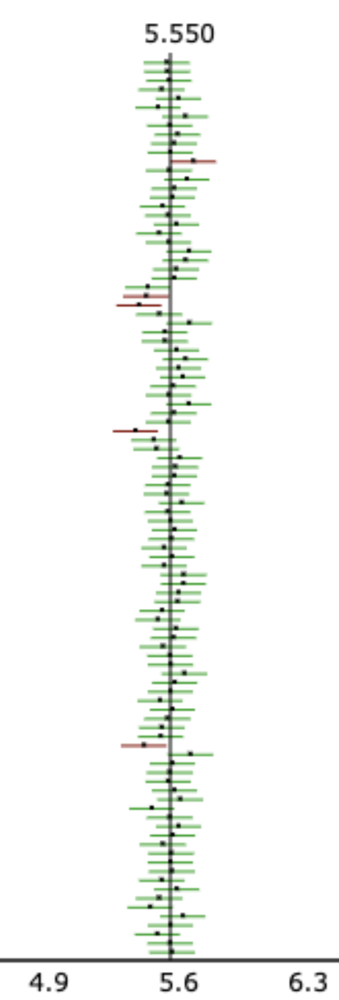
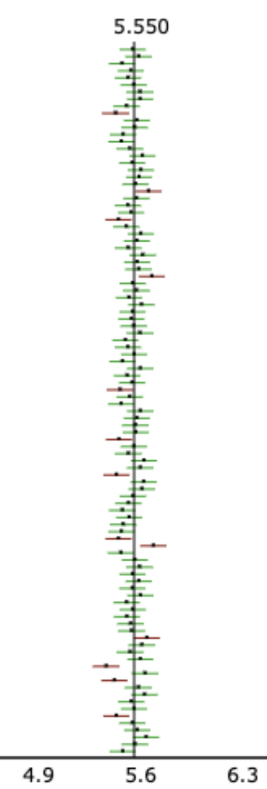
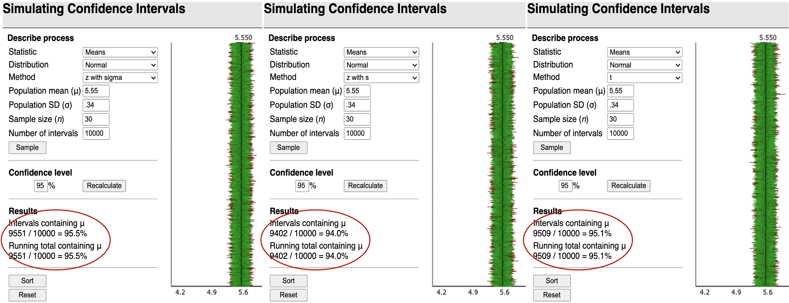
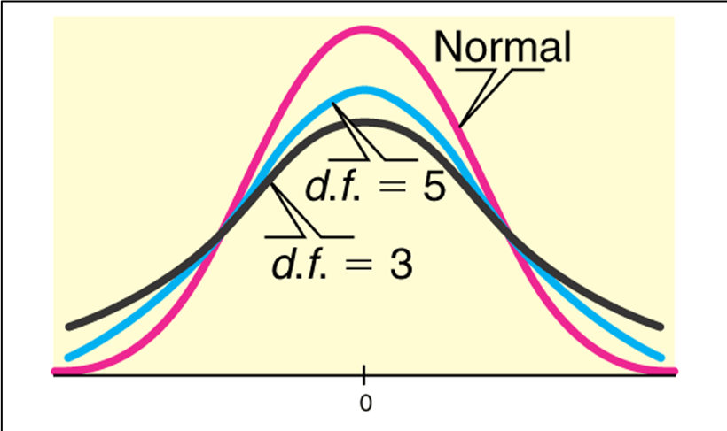
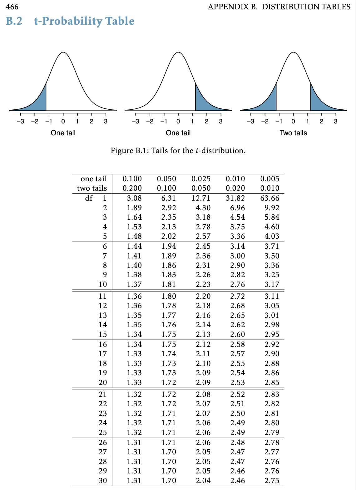
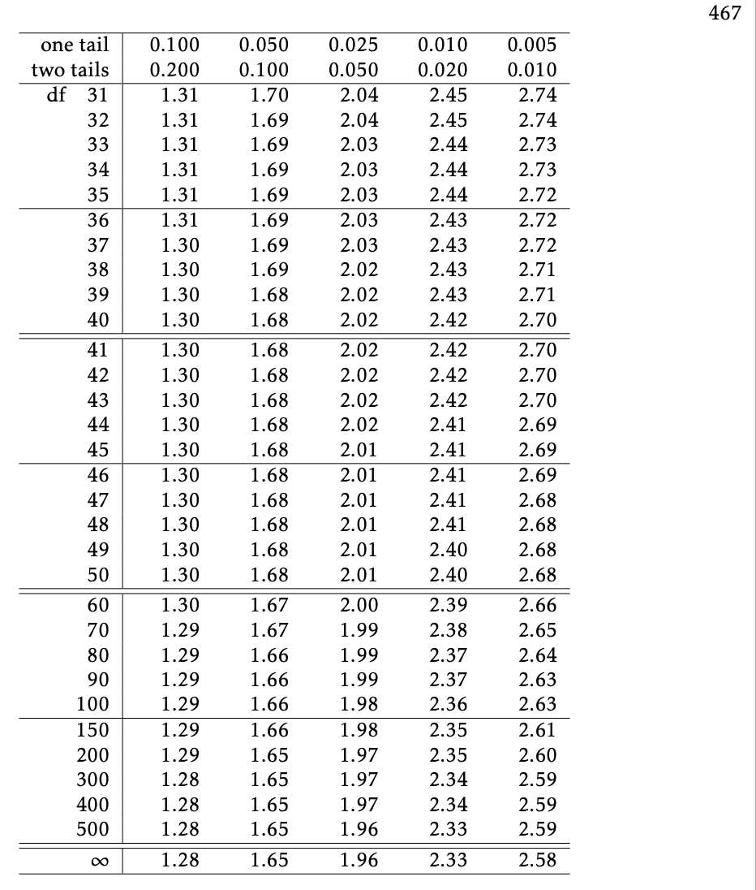

BSTA 511/611
OHSU-PSU School of Public Health
2025-10-29
What are Confidence Intervals?


Youth Risk Behavior Surveillance System (YRBSS)
yrbss from oibiostat pacakge contains responses from n = 13,583 participants in 2013 for a subset of the variables included in the complete survey dataAlso, drop missing values and add a column of id values
yrbss2 <- yrbss %>% # save new dataset with new name
mutate( # add variables for
height.ft = 3.28084*height, # height in feet
weight.lb = 2.20462*weight # weight in pounds
) %>%
drop_na(height.ft, weight.lb) %>% # drop rows w/ missing height/weight values
mutate(id = 1:nrow(.)) %>% # add id column
select(id, height.ft, weight.lb) # restrict dataset to columns of interest
head(yrbss2) id height.ft weight.lb
1 1 5.675853 186.0038
2 2 5.249344 122.9957
3 3 4.921260 102.9998
4 4 5.150919 147.9961
5 5 5.413386 289.9957
6 6 6.167979 157.0130[1] 12579 3[1] 1004yrbss2: stats for height in feet id height.ft weight.lb
Min. : 1 Min. :4.167 Min. : 66.01
1st Qu.: 3146 1st Qu.:5.249 1st Qu.:124.01
Median : 6290 Median :5.512 Median :142.00
Mean : 6290 Mean :5.549 Mean :149.71
3rd Qu.: 9434 3rd Qu.:5.840 3rd Qu.:167.99
Max. :12579 Max. :6.923 Max. :399.01 [1] 5.548691[1] 0.3434949yrbss2Take 10,000 random samples of size
n = 30 from yrbss2:
# A tibble: 300,000 × 4
# Groups: replicate [10,000]
replicate id height.ft weight.lb
<int> <int> <dbl> <dbl>
1 1 5869 5.15 145.
2 1 6694 5.41 127.
3 1 2517 5.74 130.
4 1 5372 6.07 180.
5 1 5403 6.07 163.
6 1 2329 6.07 182.
7 1 8863 5.25 125.
8 1 8058 5.84 135.
9 1 335 6.17 235.
10 1 4698 5.58 124.
# ℹ 299,990 more rowsCalculate the mean for each of the 10,000 random samples:
# A tibble: 10,000 × 2
replicate mean_height
<int> <dbl>
1 1 5.59
2 2 5.59
3 3 5.51
4 4 5.65
5 5 5.64
6 6 5.57
7 7 5.61
8 8 5.60
9 9 5.52
10 10 5.64
# ℹ 9,990 more rowsHow close are the mean heights for each of the 10,000 random samples?

\[\overline{x}\ \pm\ z^*\times \text{SE}\]
where

When can this be applied?
Simulating Confidence Intervals:
The figure shows CI’s from 100 simulations.
What percent of CI’s captured the true value of \(\mu\) ?

Actual interpretation:
What we typically write as “shorthand”:
WRONG interpretation:

100 CI’s are shown in the figure.
Correct interpretation:
WRONG:
Simulating Confidence Intervals: http://www.rossmanchance.com/applets/ConfSim.html

The normal distribution doesn’t have a 95% “coverage rate”
when using \(s\) instead of \(\sigma\)
In real life, we don’t know what the population sd is ( \(\sigma\) )
If we replace \(\sigma\) with \(s\) in the SE formula, we add in additional variability to the SE! \[\frac{\sigma}{\sqrt{n}} ~~~~\textrm{vs.} ~~~~ \frac{s}{\sqrt{n}}\]
Thus when using \(s\) instead of \(\sigma\) when calculating the SE, we need a different probability distribution with thicker tails than the normal distribution.
The Student’s t-distribution:

CI for \(\mu\):
\[\bar{x} \pm t^*\cdot\frac{s}{\sqrt{n}}\]
where \(t^*\) is determined by the t-distribution and dependent on the
df = \(n-1\) and the confidence level
qt gives the quartiles for a t-distribution. Need to specify


Textbook’s rule of thumb
BSTA 511 rule of thumb
For either case, can apply if either
If do not know population distribution, then check the distribution of the data.